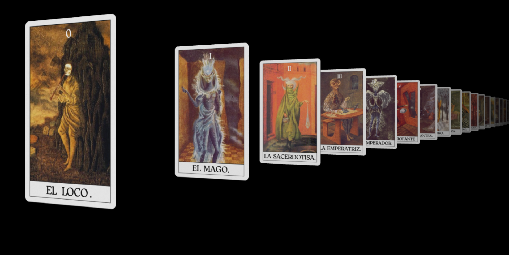

Encargo: desarrollar una propuesta de diseño en torno a un artista surrealista.
Decisión clave: reducir un museo virtual a una pregunta: ¿pueden las obras de Remedios Varo funcionar como cartas de tarot?
Resultado: Una experiencia web que traduce el universo simbólico de Remedios Varo en una tirada de tarot interactiva en 3D.
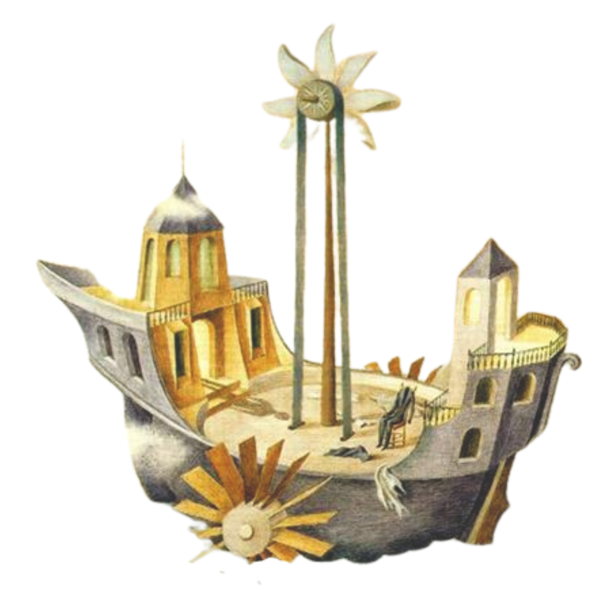
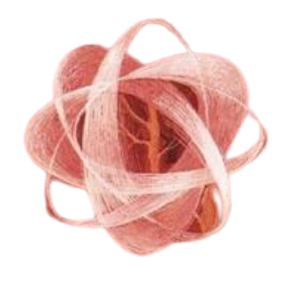
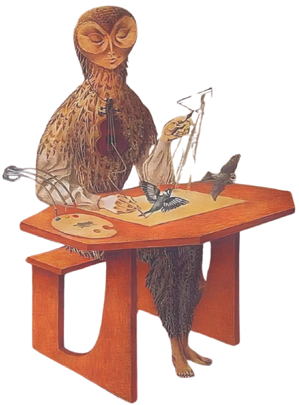
Para desarrollar mi propuesta sobre un artista surrealista elegí a Remedios Varo, por su rico mundo interior plasmado en más de 100 obras profundas sobre alquimia y esoterismo, esto me daba gran material para trabajar.
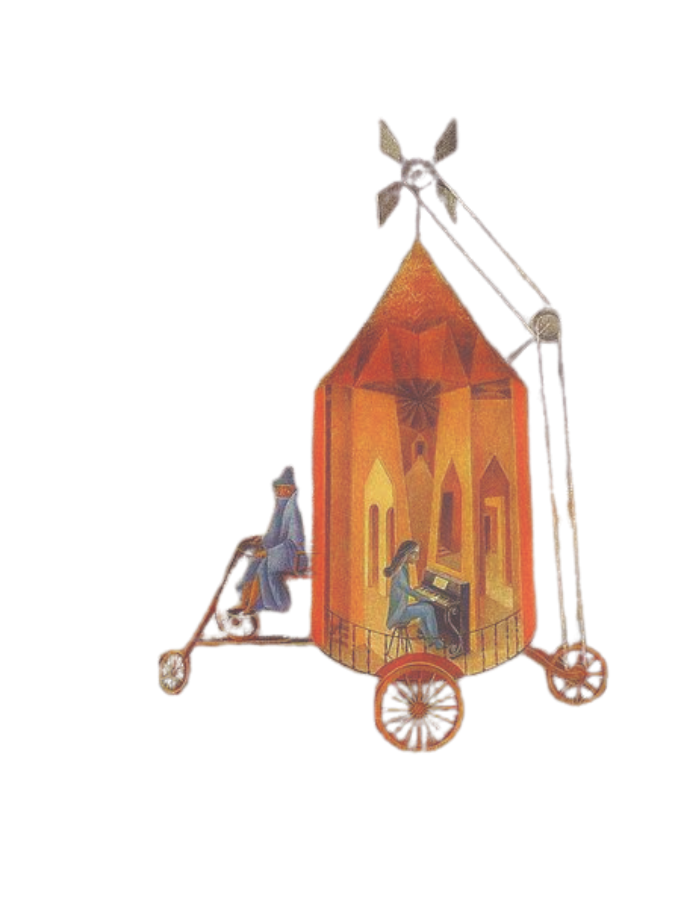
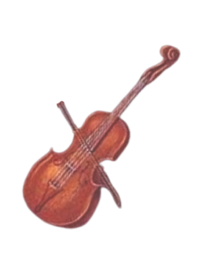
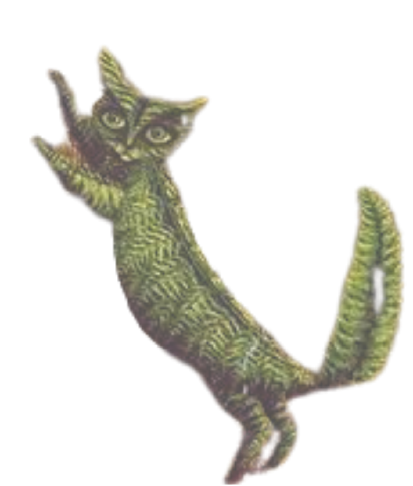
Mi propuesta inicial era un museo virtual completo, demasiado ambicioso para el tiempo disponible. Todo cambió con un comentario casual de mi profesor que hizo cambiar mi enfoque: "Me gustan sus obras de porque parecen cartas de tarot".
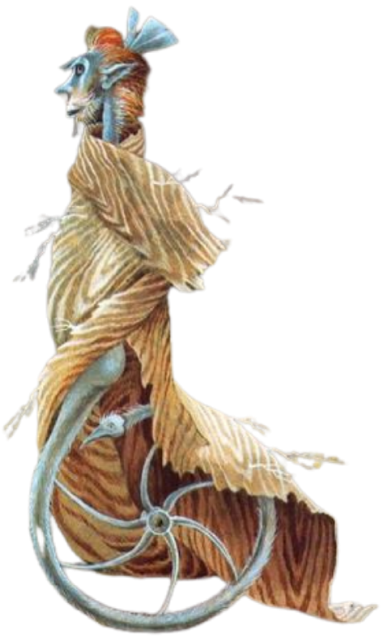
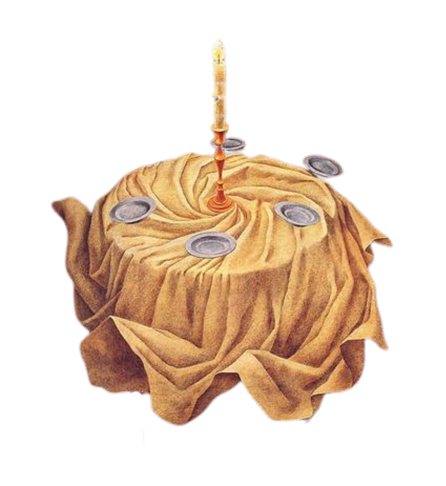
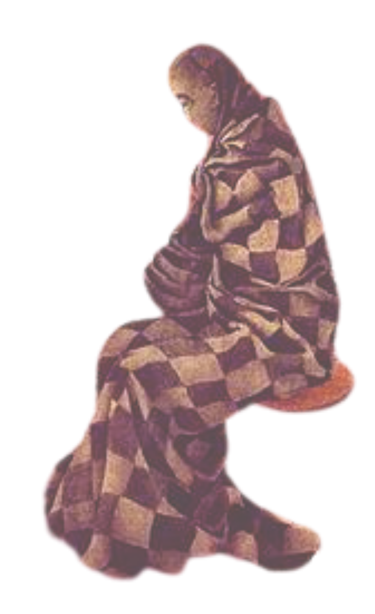
Comparé más de 100 obras contra mi propio mazo Rider-Waite y seleccioné 22.
Una por cada arcano mayor, evaluando similitudes visuales y simbólicas, así obtuve un hallazgo: estaban inspiradas en el tarot. Finalmente, para dar contenido a cada tirada, coloqué 176 significados distintos.
Ver colección completa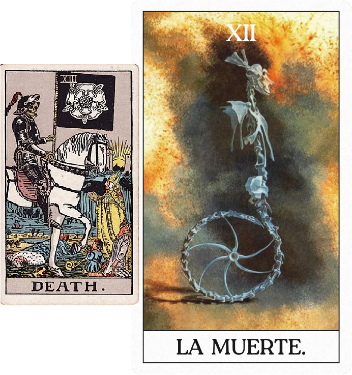
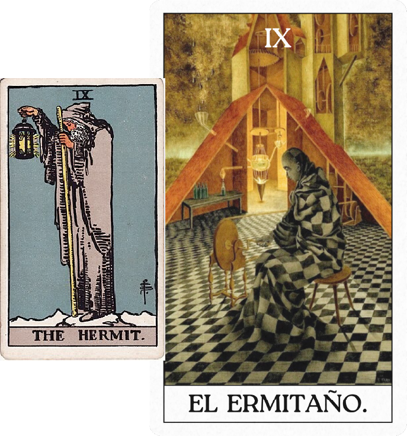
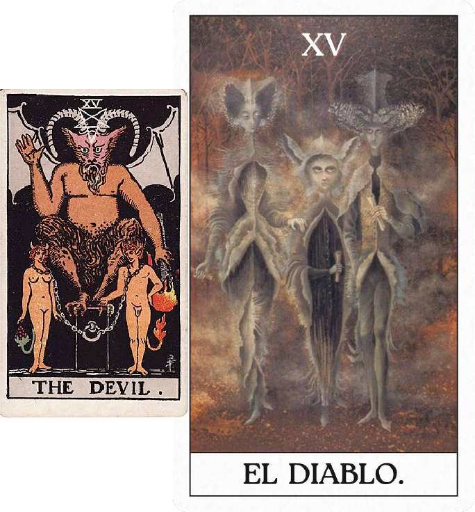
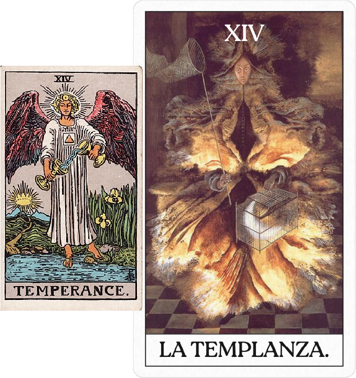
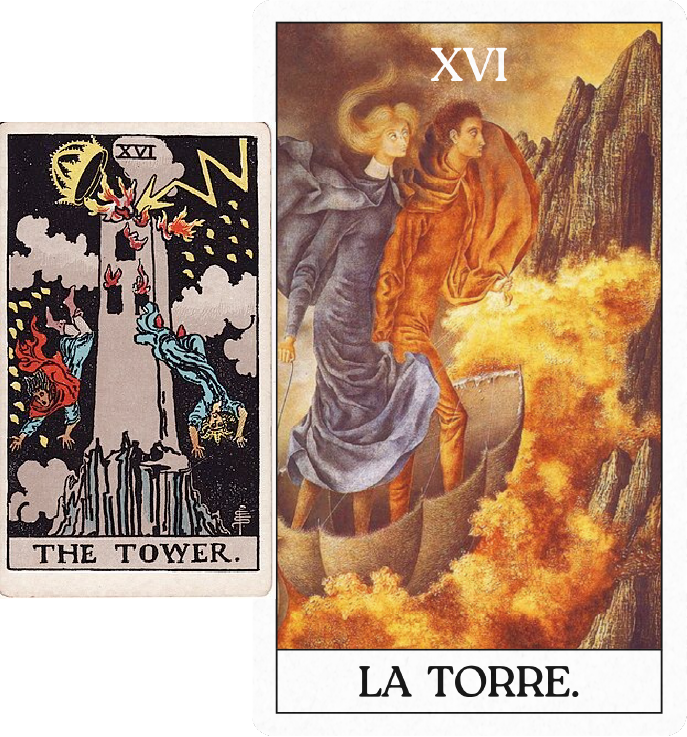
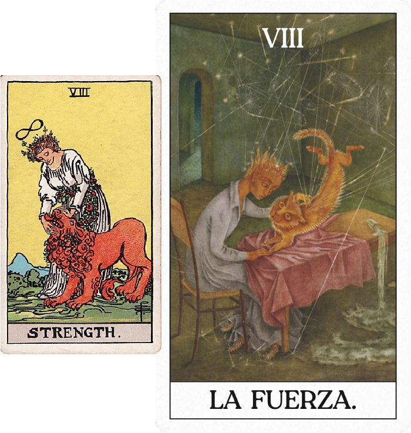
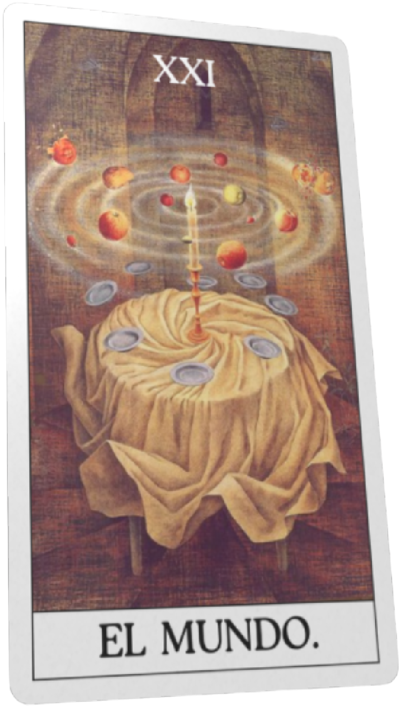
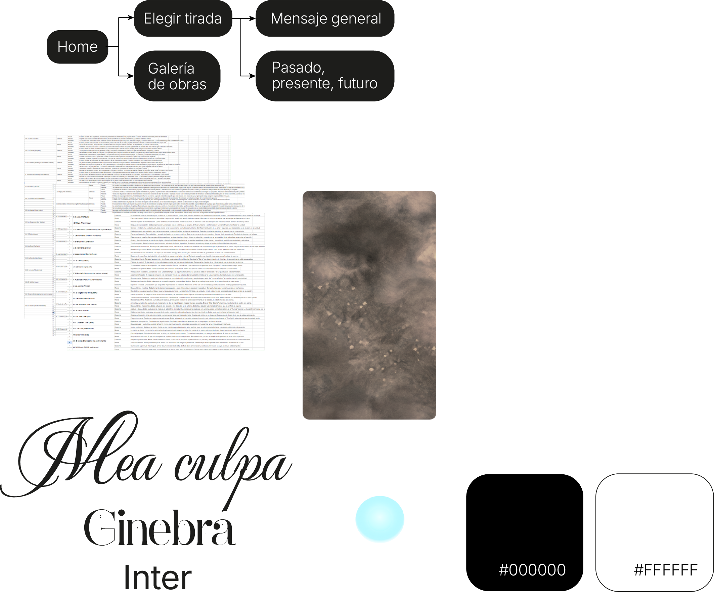
Con la prioridad de que su arte sea el protagonista, diseñé la identidad visual de la web
y las cartas del mazo, manteniendo una atmósfera etérea y esotérica. Esto incluyó redactar los significados de las tiradas y pasar las cartas a formato 3D para lograr una experiencia inmersiva y contemplativa.
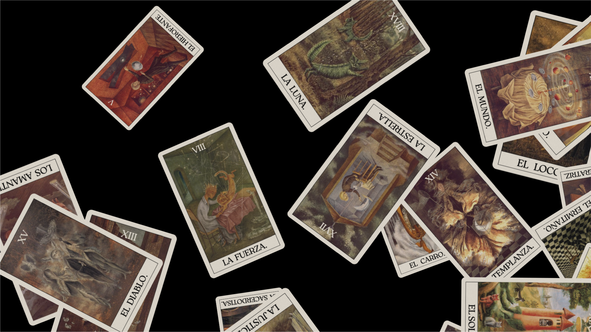
Vivir experiencia